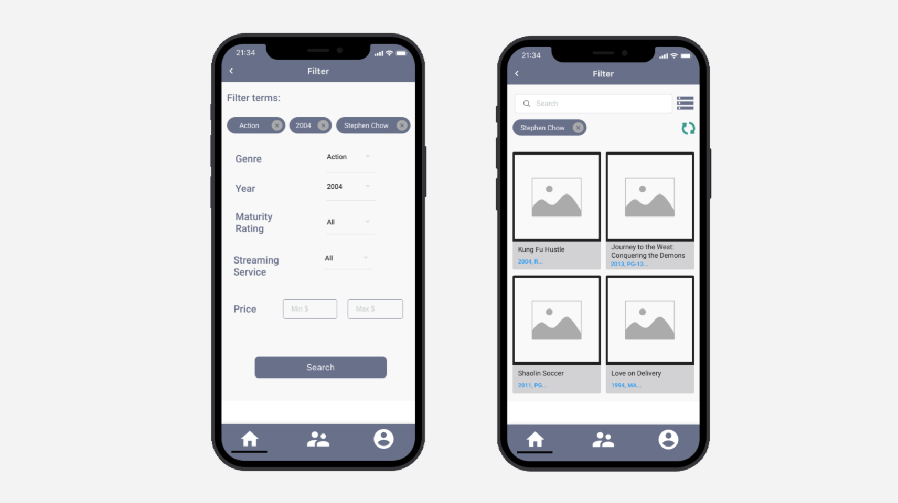

WatchWho
Student Project | Winter 2021
In a Technology and Human Interaction course (CS 314) in Winter 2021, I worked in a team of six to identify a problem and iteratively design a digital product. We created a concept design of a streaming aggregator and SNS app that allows users to locate TV series and movies across platforms and connect with people.
Role
Co-planned and managed team tasks
Actively designed/redesigned components for each iteration
Created the components for the second task in our paper prototype
Conducted one user test
Developed the final prototype
Co-created the final presentation
The Design Challenge
With so many streaming services now available, keeping track of them and their content becomes challenging. If a user wants to watch a specific show or movie, it’s not always clear which service carries it and at what price. There is also no convenient way to track content across various platforms. Thus, finding specific shows among multiple streaming services can be difficult and time consuming, and can even cause users to unknowingly pay for programs they could have accessed for free on a different service.
To address these issues, our team proposes a new design for a streaming aggregator. However, unlike other aggregation platforms, ours further enhances the content consumption experience through a social-media feature, allowing users to easily make and give recommendations to their friends. Currently, such technology doesn’t exist, meaning watchers must communicate their recommendations to their friends through third party platforms (i.e. over text, in-person, or on a different social media platform).
Research
Before prototyping, we discussed both design inspiration and competitors to draw from design we felt was well constructed, and to consider the aspects of our competitors we felt could be done better.
Spotify’s social feature was the initial inspiration for our social feature. We identified a user pain point in not knowing what to watch and wanted to test if having easy access to friends’ recommendations and watching habits could remedy this pain.
ReelGood is another streaming aggregator. Based on our heuristic evaluation, we found ReelGood’s current design violates heuristic 7, flexibility and efficiency of use. ReelGood has no concrete, easy way to browse through content, only ways to search for content once the user already knows what they want to watch. We made sure to keep in mind our goal of supporting users in finding great content as quickly as possible.
Design Goals
We synthesized our research into goals to incorporate into our final design solution.
The ability to view and search content from all their purchased streaming services at once
The ability to select content as quickly as possible
The ability to see what friends are watching, and to recommend to friends as well.
To address these issues, our team proposes a new design for a streaming aggregator. However, unlike other aggregation platforms, ours further enhances the content consumption experience through a social-media feature, allowing users to easily make and give recommendations to their friends. Currently, such technology doesn’t exist, meaning watchers must communicate their recommendations to their friends through third party platforms (i.e. over text, in-person, or on a different social media platform).
User Persona
Ideation
Based on our goals, we began brainstorming possible core features. One of our top priorities was providing a clear, seamless user experience flow. The features we focused on were:
Content search
Display prices for quick and easy comparisons
Automatically filtering results for a movie by what a user owns
Price appears from low to high
Giving recommendations and seeing what friends are watching
We drew our first wireframes on paper and constructed this paper prototype in a slide deck to test “wizard of oz” style.
User Testing
Given the growing popularity of streaming services among users of all ages, we would have liked to test our prototype with a group of users that reflected this diversity in age and include participants who are subscribed to a number of streaming services and may already be using a streaming aggregator.
Because of the COVID-19 pandemic, we were only able to test with the following users:
- High school student without streaming aggregator experience but with streaming service experience (1)
- College student without streaming aggregator expereince but with streaming service experience (4)
- Adult withithout a streaming aggregator experience but with streaming service experience (1)
During our User Testing Phase, we gave our participants a few sample tasks to complete:
Making an account + connecting their services
Filtering and Searching by genre, year, director, etc
Adding movies to watchlist + sending recommendations
Providing comments along the way + post experiment feedback survey
We gathered data that measures the ease of use of our prototype and captures the differences between our prototype and other streaming aggregators. We kept track of four data points: task completion time (how long it takes a participant to complete a task), “errors” made (how many times a participant makes an error due to the design of the prototype), verbal feedback from the participant on their thoughts after completing a task, and notes on the participant’s thought process while completing a task. We also conducted a short interview after testing to ask users about their past experiences with streaming aggregators and about how their experience was with our design, specifically about features unique to our design.
Results and Challenges
Although users liked our concept, we received a lot of comments on its usability. Overall, users found our interface learnable, but not immediately intuitive, or as one user put it, “not difficult, but not intuitive.”
“I don’t like that other people can see what I’m watching. It didn’t feel intrusive- It was intrusive! I feel like a private feature is a necessity for me.”
“I rarely go out of my way to recommend movies to people. Especially since they just forget anyway. But I might if I can do it automatically on this app.”
”The icons changed from a text bubble to two people looking things and then I got confused.”
Iteration
After receiving feedback from our user testing, we sought to remedy our most salient issues, most of them related to our social features. These features are:
A search bar to our friends page to make it easier to find a specific friend
An account page that has access to settings and the ability for a user to make their activity private, to ease privacy concerns brought up during testing
Icons to increase consistency in UI design elements
Updated user flow of recommendation content to friends. We allowed recommendations to occur on the movie/TV show-specific pages as well as on the social feed, where we asked the user to find what they want to recommend, and to whom
New organization of social page sub features to reduce overwhelm and create clearer distinctions between the activity feed, recommendation, direct message inbox, etc.
Connect with Friends through contacts on phone, Facebook, etc
Social Activity Button (can update current watching OR recommend to a friend) and likes/comments on statuses
Introducing WatchWho
Filter
Kung Fu Hustle Movie
Profile
Social Activity
Next Steps
While we began the ideation process early, we had approximately one week to conduct user testing and create an improved iteration of our app. Because of these constraints, we focused on producing a MVP. This is an overall proof-of-concept; we would want to conduct further usability testing with users to see if our design really is simple and intuitive enough for people of all ages to use. The next step would require us to do further user research in learning their flows and the difficulties of integrating this app into regular use. Lastly, I would love to explore different ways of streamlining the experience along with related microinteractions.
Reflection
This was my first experience working with a team composed of people from a variety of different disciplines, such as communication studies, psychology, computer science, and economics. Even though it was more difficult to schedule meetings with all team members, we consistently communicated our progress to one another so we each understood what we needed to accomplish.
Iterative design
I really enjoyed learning about heuristics, as it formalized design concepts I knew about through concrete language. For example, one heuristic that became important to our project was consistency. Upon reflection, we’ve realized this confusion stemmed from a lack of external consistency. Most social or direct messaging platforms are fairly similar in interface, and we strayed from this (for no particular reason). Our final prototype shows a lot more consistency to this classic social structure, and if we had time to test this prototype, we hypothesize users would find the flow and UI a lot less confusing.
Contextualizing the User Testing Environment
During our user testing, one user said they wished we color coded our prototype. This led me to believe that we didn’t frame the purpose of our prototype correctly. Defining the purpose of testing, and the user’s role within testing, is really important to the flow of the test environment, and properly doing so may have allowed us to draw deeper insights.